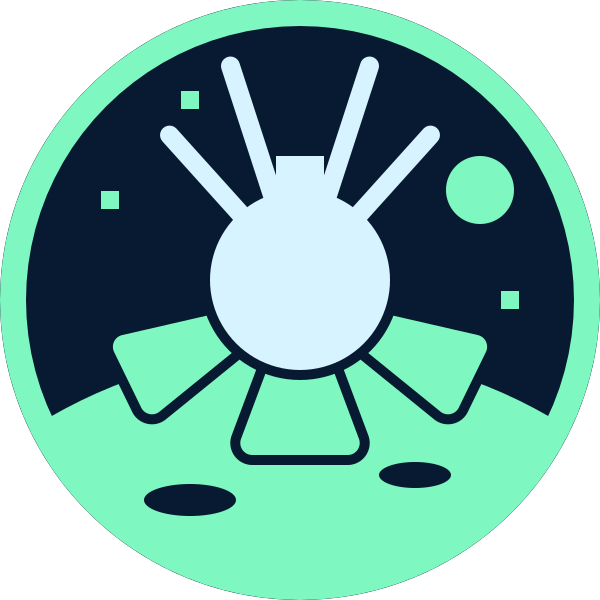
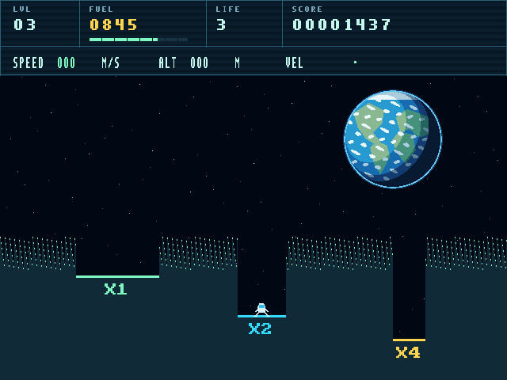
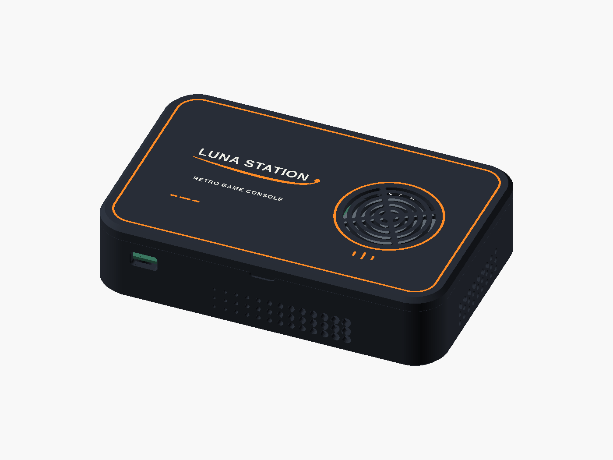
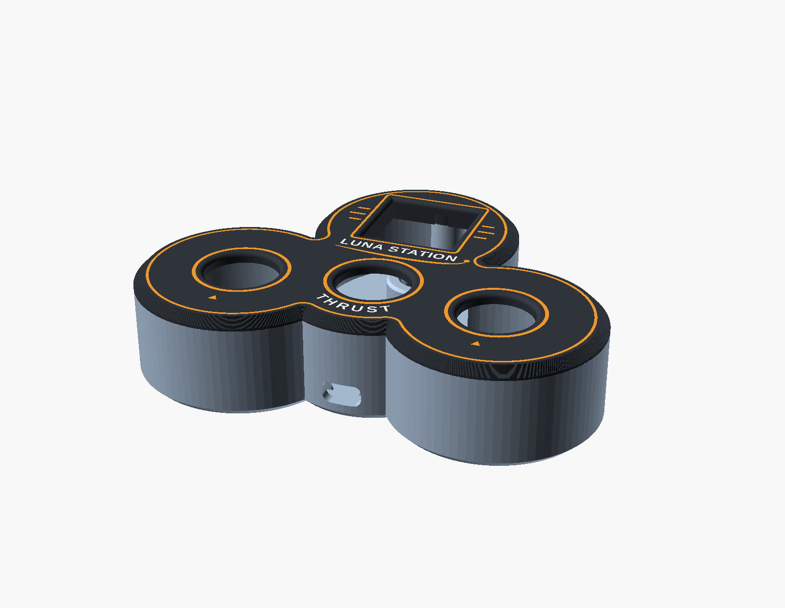

KEEP EXPLORING
Discover the hardware design, game code, wiring guides and 3D-printable console and gamepad models on GitHub.
Luna Station is a hobby project by Eduard Garanskij.
Created for Retro Computer Festival 2026 in Cambridge.
Contact: retro@lea.lt

LUNA 9A retro console built from logic up
A hobby project celebrating 60 years since Luna 9's first soft landing on the Moon.
Play Lunar Lander on a homemade FPGA console.
Retro Computer Festival · Cambridge · 2026
01 / THE GAME
Gravity never stops. Rotate your lander, use just enough thrust and touch down gently before your fuel runs out. Narrower pads pay bigger bonuses — if you can land safely.

Actual gameplay, generated by the FPGA.
| LEFT / RIGHT | Rotate the lander |
|---|---|
| THRUST | Start the game or fire the engine |
| MENU | Go back or open the menu |
With the optional keyboard bridge: A / D rotate, W thrusts and B opens the menu.
02 / INSIDE THE CONSOLE
An FPGA is a chip whose logic can be configured to become a custom computer. Luna Station combines that hardware with a tiny game program.
| BOARD | Sipeed Tang Nano 9K FPGA |
|---|---|
| CPU | 32-bit PicoRV32 RISC-V, 27 MHz; 8 KiB application RAM |
| VIDEO | HDMI, 640 × 480 at 60 Hz |
| GAMES | Booted from a FAT-formatted SD card |
| SOUND | ESP32 synthesizer and MAX98357A amplifier |
| INPUT | ESP-NOW wireless gamepads; optional LED matrix |

Console case design
Gamepad case designCase images are CAD renders. The project is a work in progress: check the wiring and printed parts for your own hardware.